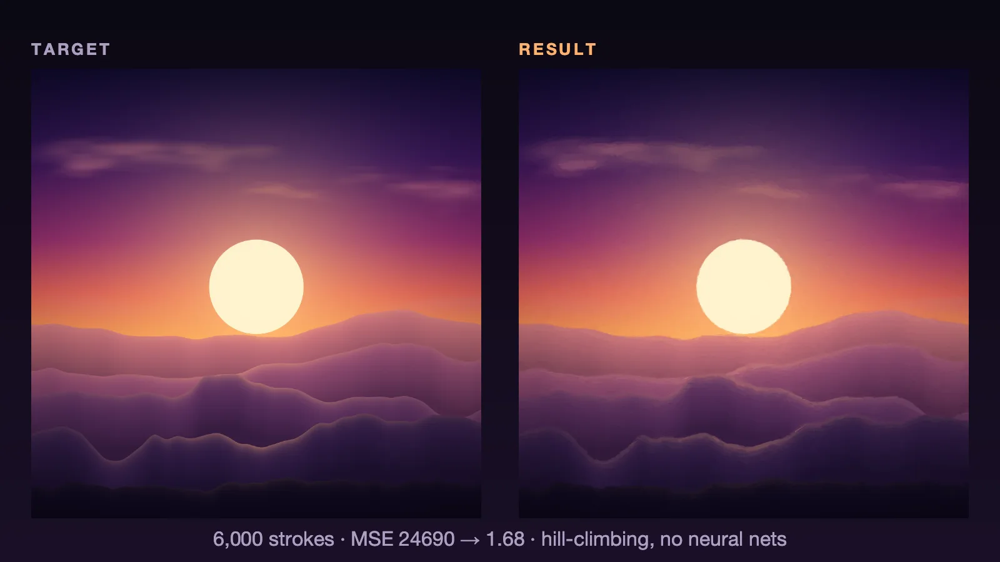
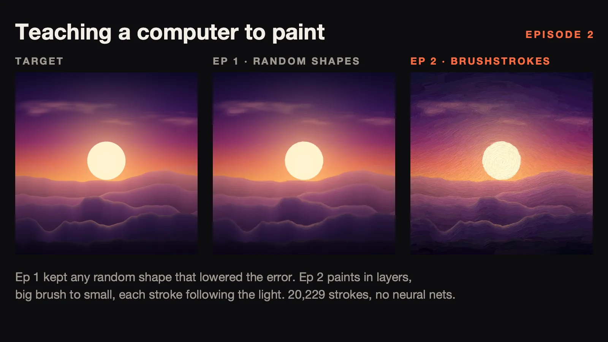
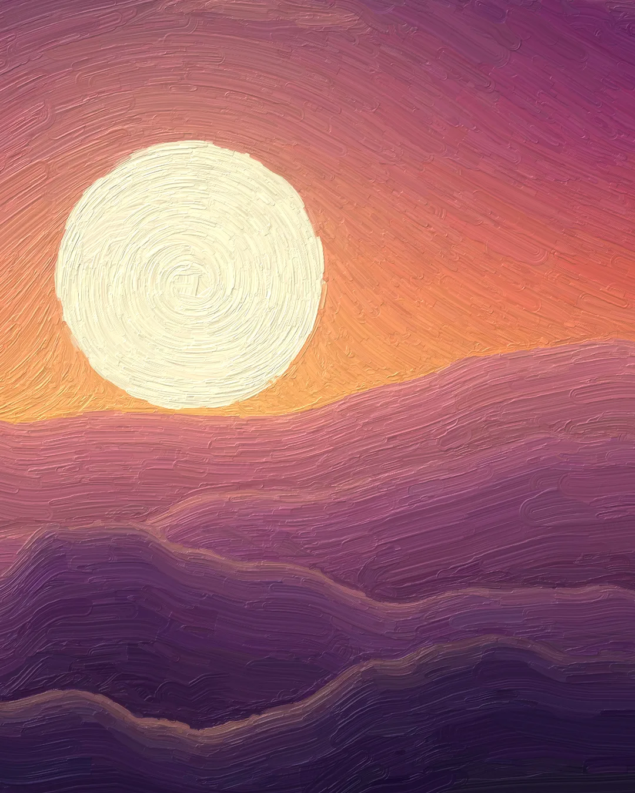
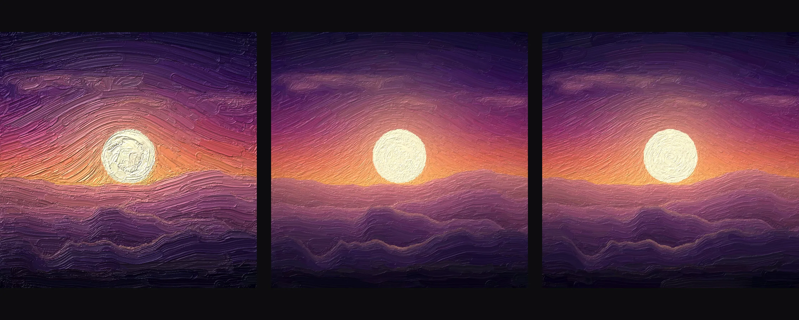
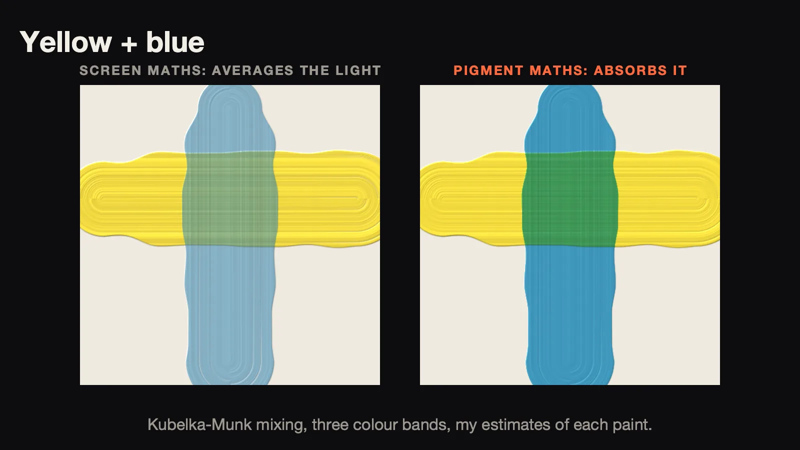
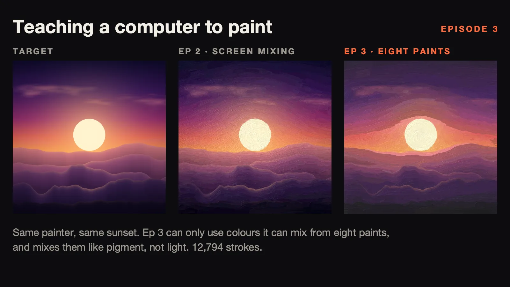
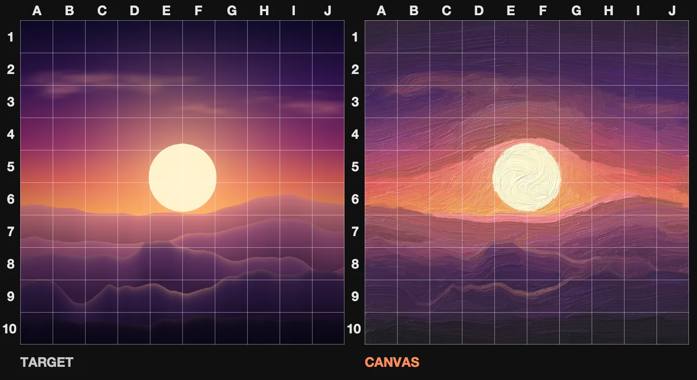
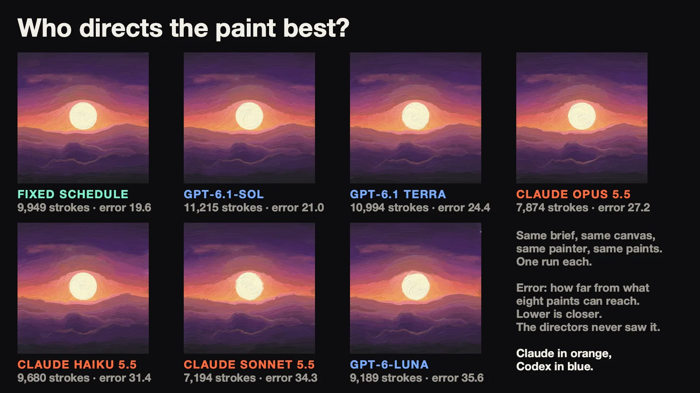
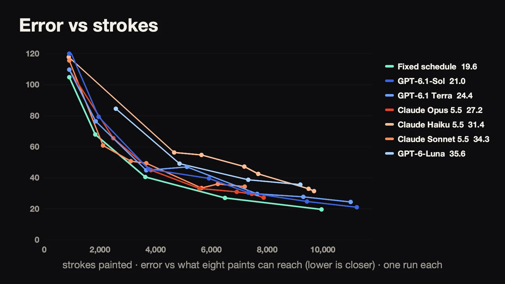

Teaching a computer to paint
One painting engine, built an episode at a time, every episode painting the same sunset so any two can sit side by side. Then six AI models took turns as art director.
Episode 1
Random shapes
Propose a random shape, give it the best colour, keep it only if the picture gets closer. 6,000 strokes, error from 24,690 to 1.68. Accurate, and it looks like a filter.

Episode 2
Brushstrokes that follow the light
Hertzmann's 1998 painterly method: five brushes from big to small, strokes steering along the edges, plus bristle texture and paint thickness lit from the top left. 20,229 strokes.



Episode 3
Paint that mixes like paint
Screens average light, so yellow and blue make a muddy sage. Paint absorbs light, so they make green. Kubelka-Munk mixing, eight real paints, a recipe for every stroke.


Episode 4
The model as art director
The model never places a stroke. Each round it looks at the target and the canvas on a grid and gives up to three notes: where, which brush, and why. The painter does the rest. It never sees the error score.



| Director | Strokes | Error |
|---|---|---|
| Fixed schedule (Hertzmann 1998) | 9,949 | 19.6 |
| GPT-6.1-Sol (Codex) | 11,215 | 21.0 |
| GPT-6.1 Terra (Codex) | 10,994 | 24.4 |
| Claude Opus 5.5 | 7,874 | 27.2 |
| Claude Haiku 5.5 | 9,680 | 31.4 |
| Claude Sonnet 5.5 | 7,194 | 34.3 |
| GPT-6-Luna (Codex) | 9,189 | 35.6 |
No model beat the fixed schedule at the finish. The models directed like painters, mostly big shapes first and the sun next, and their notes named real problems. But they were judging by eye, and the schedule was checking every cell.